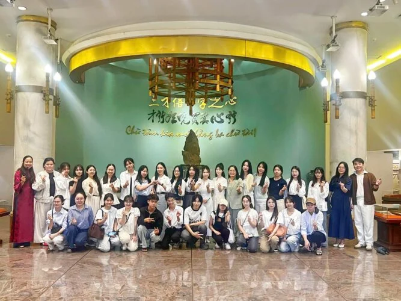
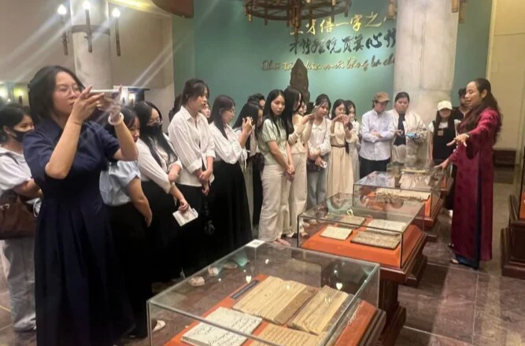

Ảnh:
Ngày 17/9/2026, đoàn sinh viên ngành Văn học, Trường Đại học Khoa học – Đại học Thái Nguyên đã có chuyến tham quan, học tập thực tế tại Bảo tàng Văn học Việt Nam. Đây là dịp để các bạn sinh viên trực tiếp tìm hiểu về lịch sử văn học dân tộc, thông qua những tư liệu, hiện vật gắn với cuộc đời và sự nghiệp của các thế hệ nhà văn, nhà thơ Việt Nam.

Trong hành trình tham quan, sinh viên được khám phá không gian trưng bày từ văn học cổ – trung đại đến văn học Việt Nam hiện đại; tìm hiểu những tác giả, tác phẩm tiêu biểu và những câu chuyện phía sau các trang viết. Cùng với đó các bạn được xem bộ phim tư liệu “Lửa thiêng” về nhà thơ Huy Cận.
Chia sẻ sau chuyến tham quan, sinh viên Trần Thư Kỳ bày tỏ niềm vui và sự xúc động khi được trực tiếp nhìn thấy những hiện vật gắn với các tác giả mà mình đang quan tâm nghiên cứu. Đặc biệt, với một sinh viên đang thực hiện khóa luận, việc được tìm hiểu trực tiếp về nhà thơ Lê Anh Xuân và Thanh Thảo mang đến những trải nghiệm quý giá, góp phần mở rộng góc nhìn và khơi gợi thêm cảm hứng nghiên cứu.
Từ trải nghiệm tại Bảo tàng, Thư Kỳ nhắc đến câu nói “Văn học là nhân học”, đồng thời cảm nhận sâu sắc hơn mối quan hệ giữa văn học, con người và lịch sử. Theo em, văn học không chỉ đồng hành cùng những chặng đường của dân tộc mà còn lưu giữ những vẻ đẹp của cuộc sống và con người qua mỗi thời đại. Trong tương lai, khi tiếp nối nghề giáo viên, Thư Kỳ mong muốn sẽ đưa những thế hệ học sinh của mình đến với Bảo tàng Văn học Việt Nam để các em thêm yêu văn chương và tự hào về lịch sử dân tộc.
Cùng chung niềm hứng thú, sinh viên Nguyễn Hoài Nam cho biết chuyến đi giúp em có thêm nhiều kiến thức và trải nghiệm bổ ích. Những tên tuổi như Nguyễn Du, Kim Lân, Nam Cao để lại trong em những ấn tượng đặc biệt, đồng thời khơi dậy mong muốn học hỏi nhiều hơn để xứng đáng với tư cách một sinh viên ngành Văn học.

Đối với Hoài Nam, chuyến tham quan không chỉ là một hoạt động ngoại khóa mà còn có ý nghĩa thiết thực đối với việc học tập chuyên ngành. Những kiến thức được tiếp nhận từ các hiện vật, tư liệu và câu chuyện tại Bảo tàng giúp sinh viên có cơ hội kết nối kiến thức trên giảng đường với những dấu tích cụ thể của đời sống văn học. Em cũng bày tỏ mong muốn có thêm thời gian để trở lại Bảo tàng, tìm hiểu sâu hơn về các tác giả, nhân vật và những cuốn sách đang được lưu giữ tại đây.
Bảo tàng Văn học Việt Nam